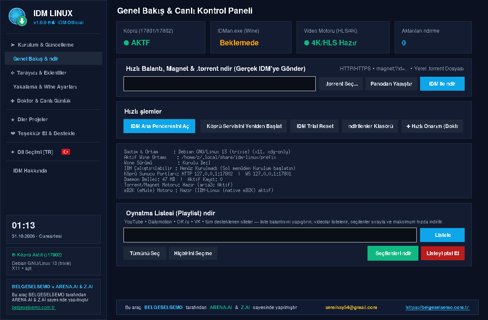
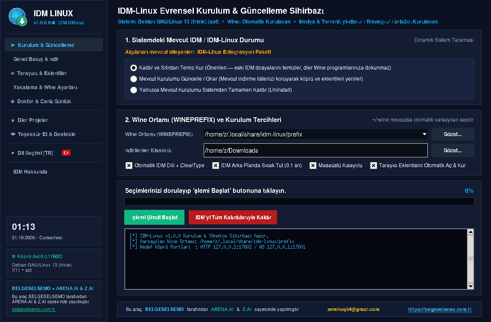
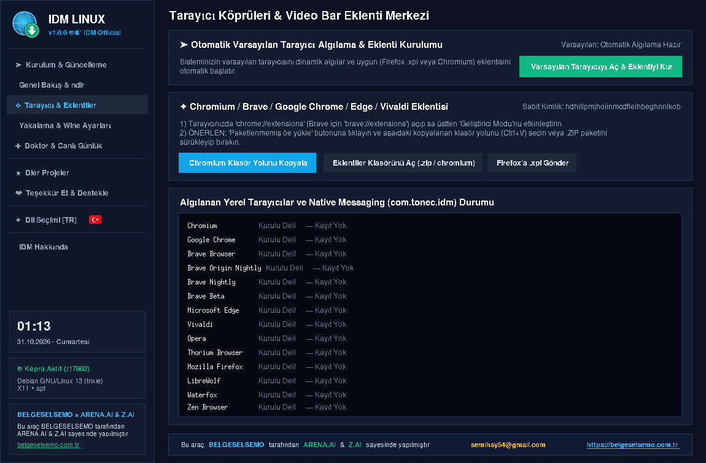
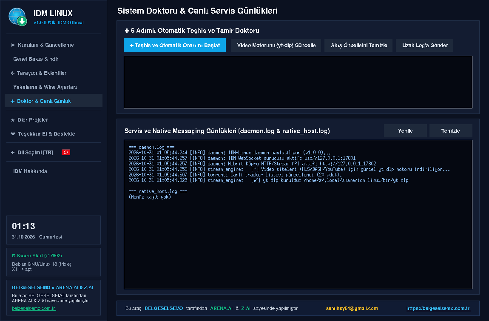
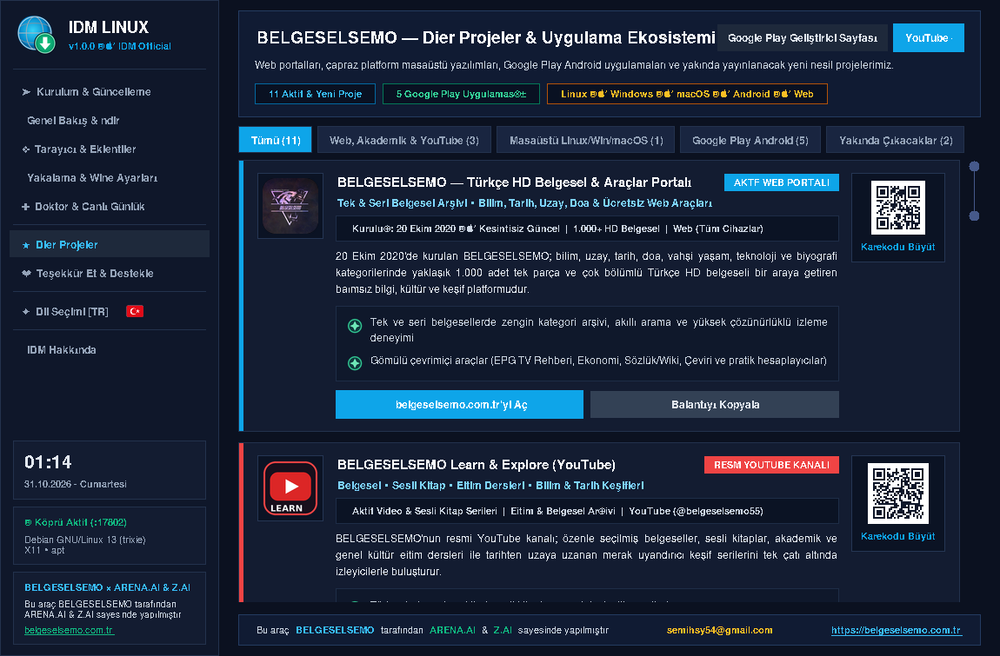
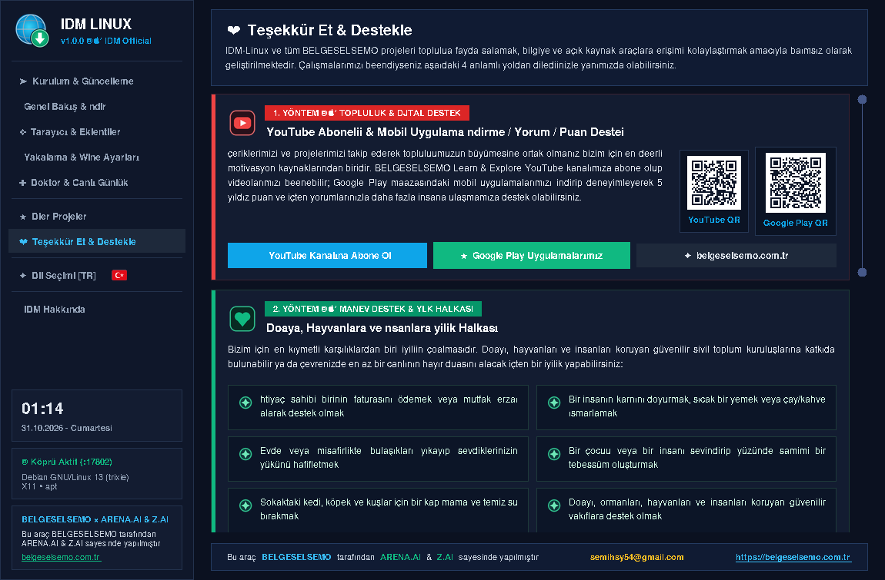
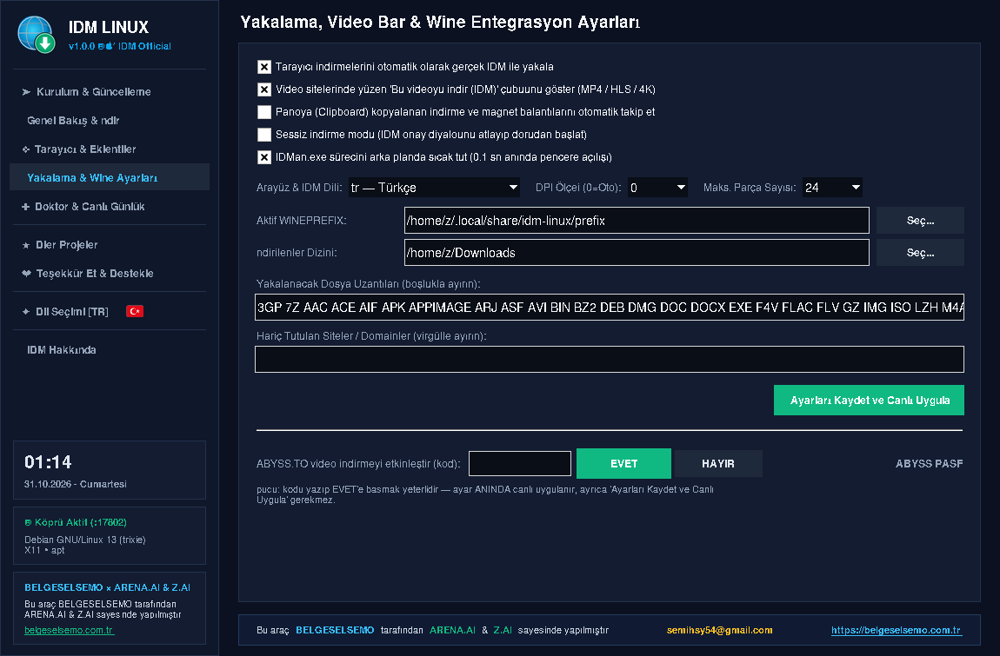

Ekosistem
Mobil BELGESELSEMO ekosistemi
BELGESELSEMO dünyası masaüstüyle sınırlı değil: Android tarafında belgesel, trivia, TV rehberi, nöbetçi eczane ve Nutuk uygulamaları aynı ekosistemi sürdürür.
Internet Download Manager'ın tüm gücü Linux'ta: tarayıcı yakalama, video motoru, torrent, canlı yayın DVR ve sistem doktoru — tek bir hafif kontrol panelinde. İndirmeler gerçek IDM motoru üzerinden maksimum hızda yürür.
Bu sayfa; tüm özellikleri ve işlevselliğiyle birlikte IDM LINUX deneyimini tek sahnede anlatır.
IDM LINUX, Wine üzerinde koşan gerçek IDM motorunu Linux tarafındaki hafif bir Python paneliyle buluşturur. Her katman aynı yerel köprü üzerinden konuşur: 127.0.0.1:17802.
Chromium ve Firefox tabanlı tüm tarayıcılarda eklenti; indirme taleplerini otomatik yakalar, IDM'ye devreder. Tıkla, gerisini IDM LINUX yapsın.
yt-dlp / streamlink motor zinciri; siteye en uygun motor otomatik seçilir, 4K ve HLS akışları dahil doğrudan IDM'ye aktarılır.
Magnet ve .torrent desteği, DHT ile tracker'sız peer keşfi. Onay penceresinden içeriği ya da yalnızca .torrent dosyasını indirebilirsin.
Canlı akışlardan kayıt alabilen DVR katmanı; başlat, durdur, yönet — hepsi arayüzden.
Popüler barındırıcı siteler için konuk oturumu ve doğrudan bağlantı çözümleme; dosya bozuk inmez, indirme IDM üzerinden tamamlanır.
6 adımlı otomatik teşhis ve tamir: köprü, video motoru, tarayıcı bağlantıları tek tıkla onarılır. Canlı günlükler aynı ekranda akar.
Gerektiren ortamlar dinamik algılanır; kurulum ve tarayıcı açılışlarında parametre otomatik eklenir, engel hiç yaşanmaz.
Arayüz 20 dilde çalışır; IDM diliyle otomatik senkronize olur. Sağdan sola diller için RTL ayarı da dahil.
Bir indirmeyi iptal ettiğinde arka planda hiçbir motor devam etmez; kaynak yemez, dosya yarım bırakılmaz.
Modern koyu Slate teması ve Neon Cyan/Emerald paleti — masaüstünde kasma yok, her şey göz önünde.







Tüm paketler aynı IDM-LINUX-1.0.0 sürümünü taşır ve GitHub Releases üzerinden dağıtılır.
İndir, çalıştırılabilir yap, çift tıkla. Sisteme iz bırakmaz.
chmod +x IDM-LINUX-1.0.0-x86_64.AppImage && ./IDM-LINUX-1.0.0-x86_64.AppImagegdebi ve benzeri GUI deb yükleyicileriyle de sorunsuz kurulur.
sudo apt install ./idm-linux_1.0.0_all.debRPM tabanlı dağıtımlar için noarch paket.
sudo dnf install ./idm-linux-1.0.0-1.noarch.rpmpacman ile doğrudan kurulum; makepkg gerektirmez.
sudo pacman -U idm-linux-1.0.0-1-any.pkg.tar.zstBELGESELSEMO dünyası masaüstüyle sınırlı değil: Android tarafında belgesel, trivia, TV rehberi, nöbetçi eczane ve Nutuk uygulamaları aynı ekosistemi sürdürür.
 BELGESELSEMOHD Belgesel & Araçlar Portalı
BELGESELSEMOHD Belgesel & Araçlar Portalı
 BELGESELSEMO TRIVIABilgi yarışması
BELGESELSEMO TRIVIABilgi yarışması
 TV REHBERİ (EPG)Yayın akışı görüntüleyici
TV REHBERİ (EPG)Yayın akışı görüntüleyici
 NÖBETÇİ ECZANE 7/24TR & KKTC
NÖBETÇİ ECZANE 7/24TR & KKTC
 NUTUK 1919-1927Sözlü & sesli
NUTUK 1919-1927Sözlü & sesli